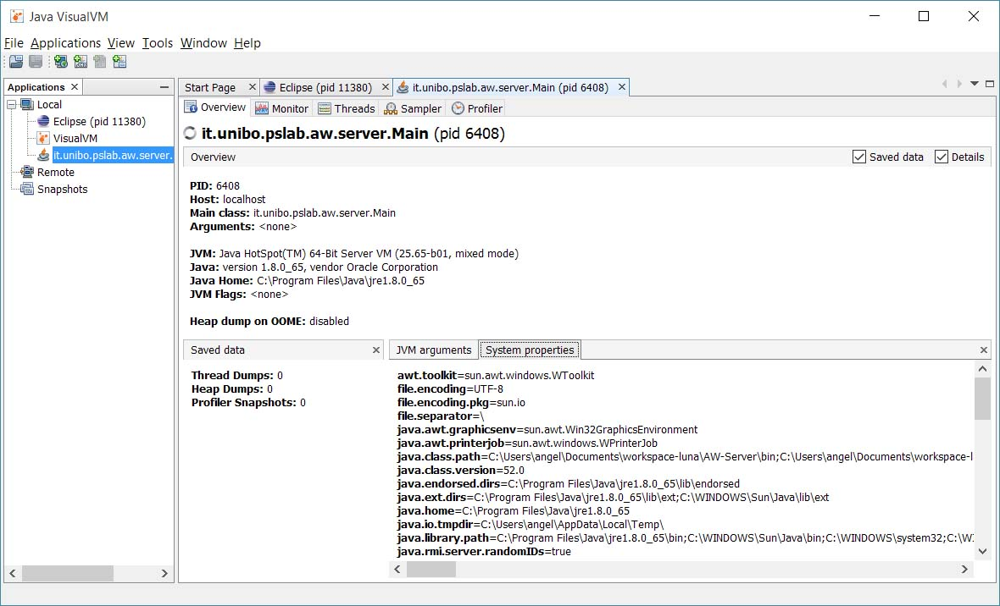
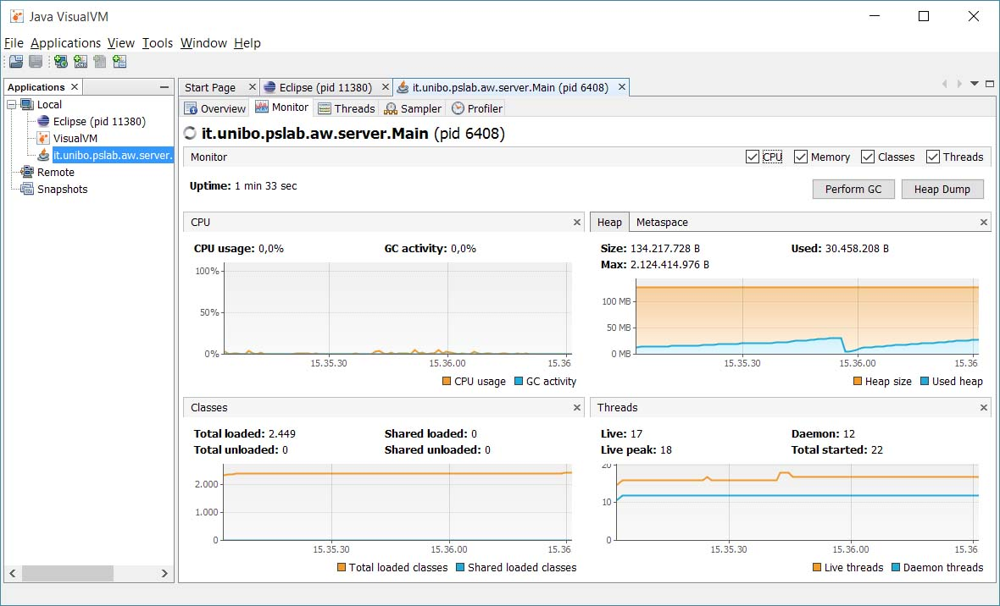
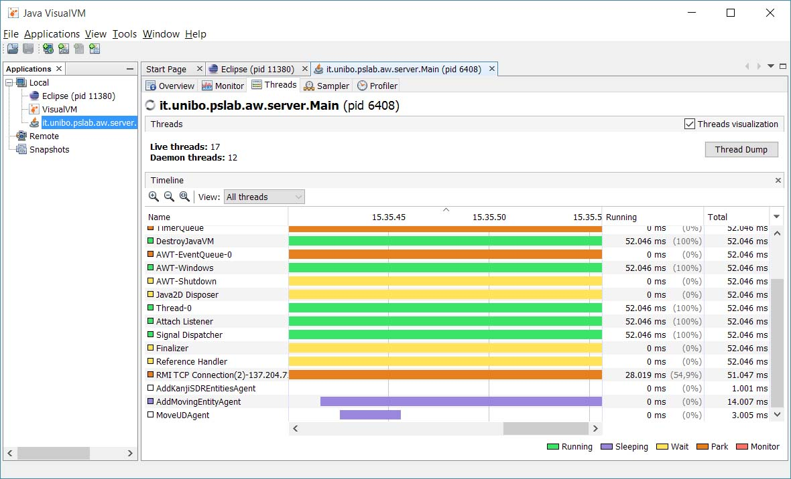
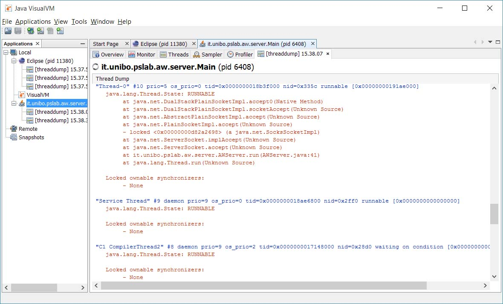

danilo.pianini@unibo.itroby.casadei@unibo.itQuando si sviluppa un’applicazione complessa, soprattutto se basata su meccanismi di concorrenza, è opportuno analizzarne il comportamento e monitorarne le performance.
Spesso il monitoraggio delle performance è essenziale per identificare eventuali problematiche o capire l’origine di problemi che possono essere sorti.
Tra gli strumenti che possono essere utilizzati per monitorare l’esecuzione di applicazioni che sono eseguite sulla JVM, due sono distribuiti unitamente al Java Development Kit (JDK).
JConsole, lo storico (e scarno) tool per il profiling di applicazioni Java.
JVisualVM, il più recente ed evoluto tool utilizzabile per monitorare l’evoluzione e le performance di applicazioni in esecuzione sulla JVM.
jvisualvm o visualvm (dipendentemente dalla distribuzione Java).


